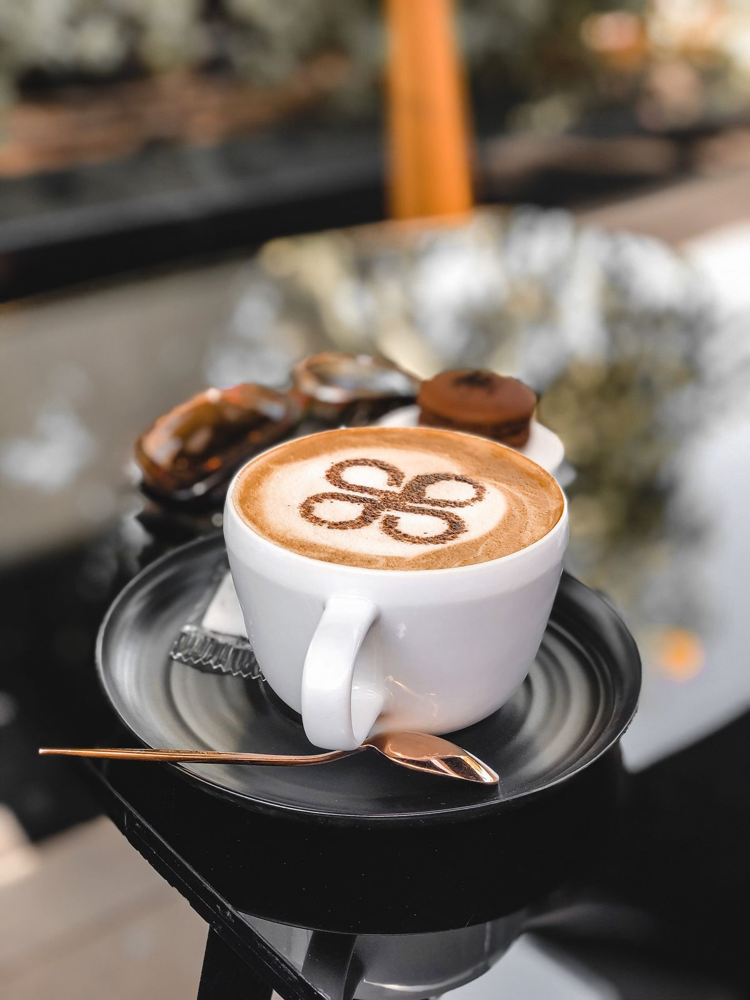
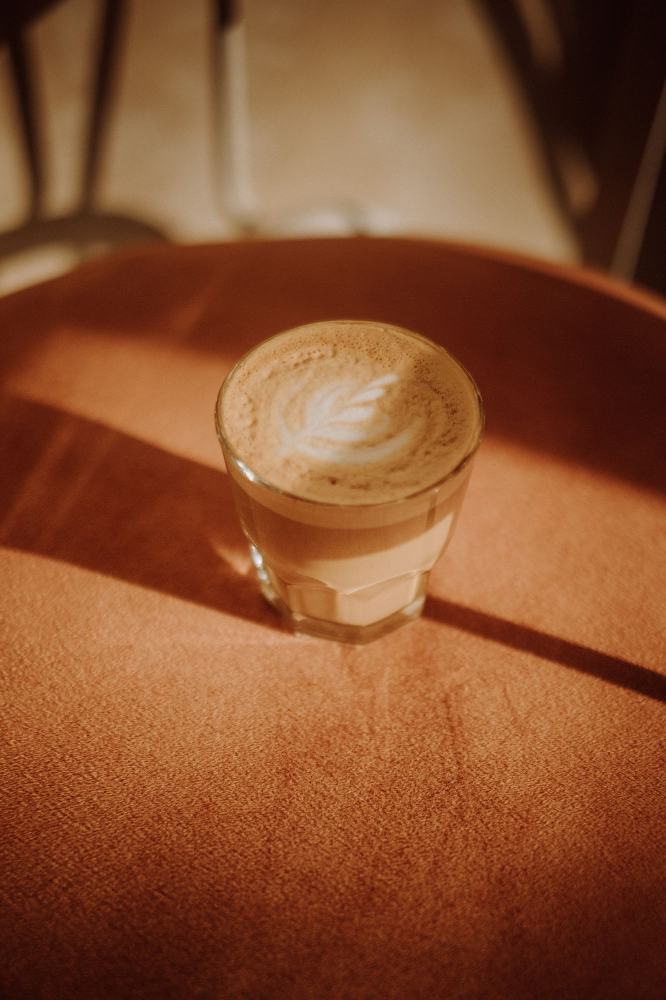
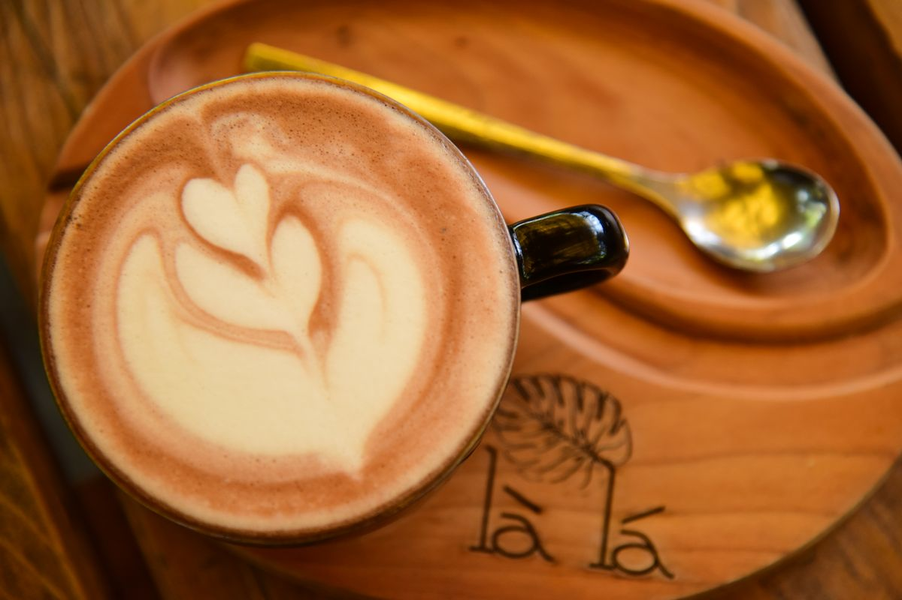

From the cafe at Harken Cafe
A cozy cafe and bakery in the French Quarter, Charleston.
Gallery



All gallery photos are stock photos, labeled as such. They show coffee and cafe drinks, not this cafe's drinks or food.
Contact
Call (843) 718-3626 Email hi@harkencafe.com
Harken Cafe serves Charleston, SC. Questions? Call (843) 718-3626.